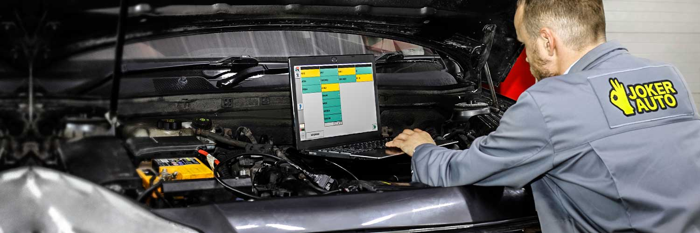

О нас
Любим и знаем машины
JOKER AUTO - мультибрендовая и мультисервисная станция технического обслуживания. Это значит, что мы работаем с отечественными и импортными авто популярных марок, занимаемся всеми системами и узлами машин. При этом цель команды - соединить универсальность и специализацию, дать уровень обслуживания на уровне специализированных автосервисов. Этого мы добиваемся за счет квалификации и опыта персонала и за счет современного и постоянно обновляемого спецоборудования.
